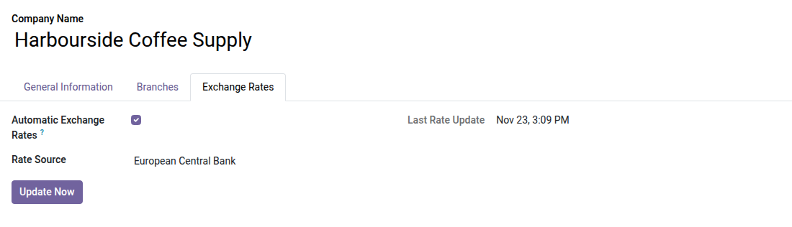
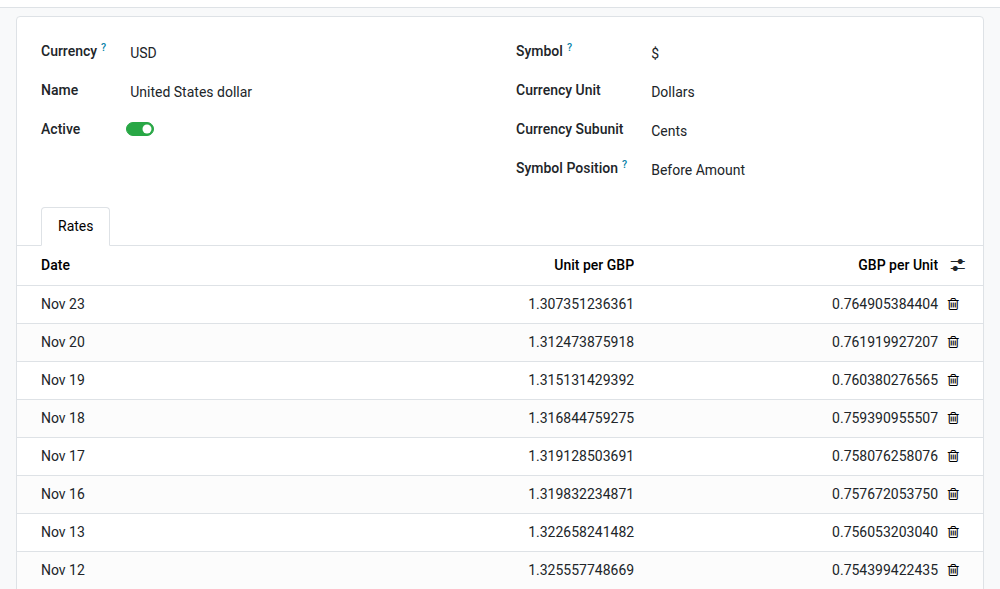

Rates update on their own, from the European Central Bank.
Odoo Community can keep a table of exchange rates; it cannot fill it. So every morning someone copies rates by hand — or nobody does, and conversions drift silently on invoices, purchases and reports.
The tab added to the company fits in four lines: the toggle, the source, the date of the last success, and a button for an immediate update. In case of failure, the error shows here — a message in the server log cannot be read from the interface.

One rate per day and per currency, recorded where Odoo expects it: invoice and report conversions rely on it with no other setting.

Accurate rates are the foundation; cash management comes next. The OdooSkills range includes a complete Treasury family — forecasting, bank reconciliation, outstanding balance tracking, customer follow-ups. Full catalog: apps.odooskills.com.
LGPL-3 license — compatible with Odoo 19.0 Community and Enterprise. Support: apps@odooskills.com.